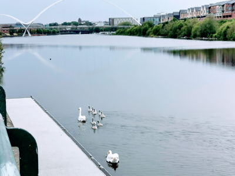
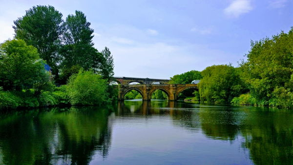
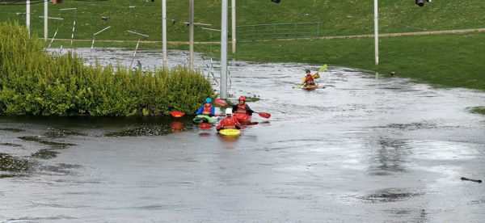

About
The River Tees
The Mighty Tees
The River Tees flows from the eastern slope of Cross Fell mountain in the North Pennines and flows 85 miles to reach the North Sea between Hartlepool and Redcar.
The section we cover is from Low Worsall down to the Tees Barrage in Stockton-On-Tees.
Whilst the river above the barrage is non tidal it does have a flow the rate of which can be found at the Canal and Rivers Trust website.
The are lots of things to see and do along and on the River. Why not have a walk along the banks to see wildlife, view or walk across one of the many iconic bridges including the Infinity bridge, so named as it's reflection makes the infinity symbol in the water.
Visit Tees barrage or take a river taxi with River Shack or if you are feeling strong, a rowing boat.
There are numerous clubs and activities. Visit the Stockton-On-Tees Borough Council website for more.
You can also try your hand at whitewater rafting and canoeing at Tees Barrage International White Water Centre